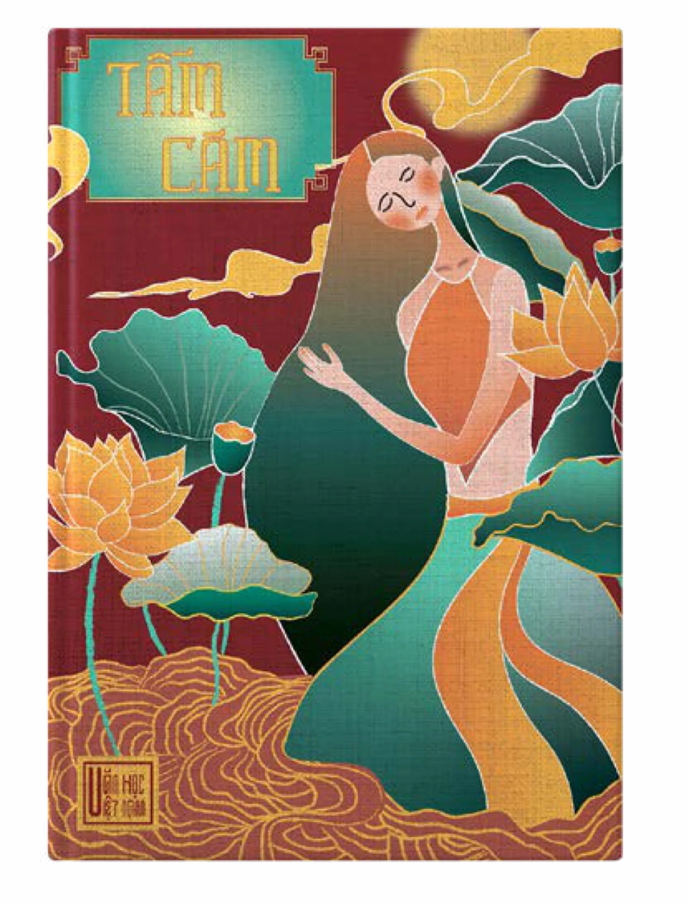
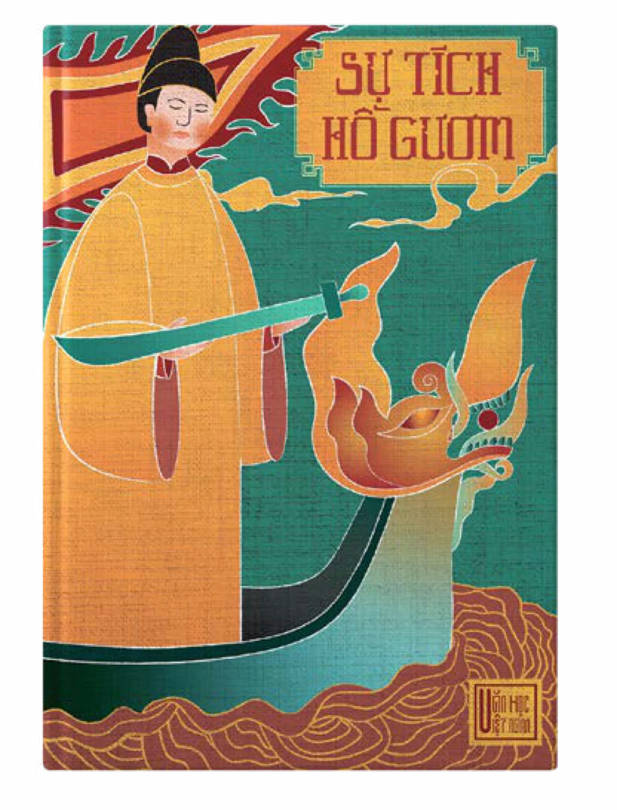
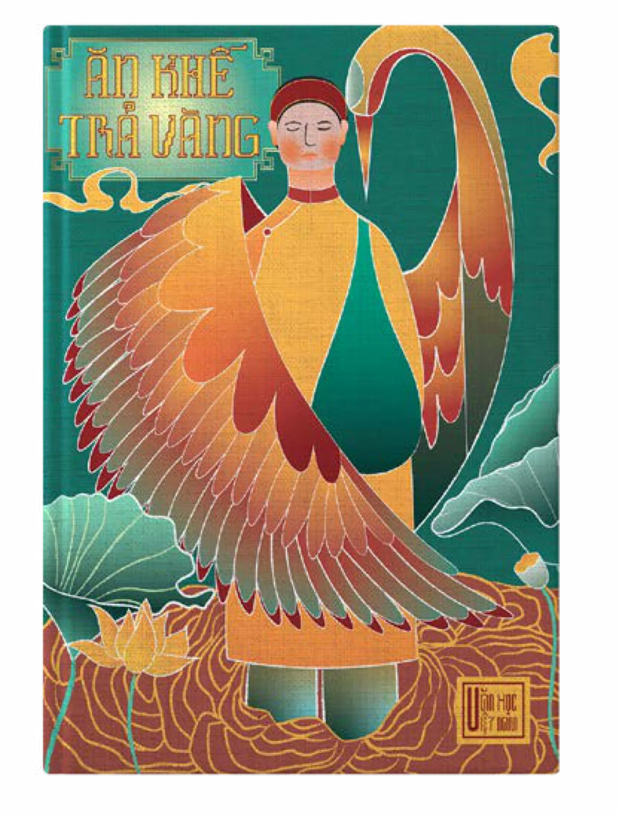
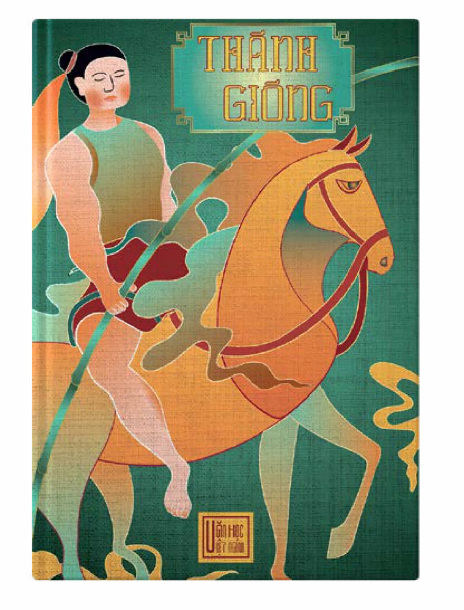
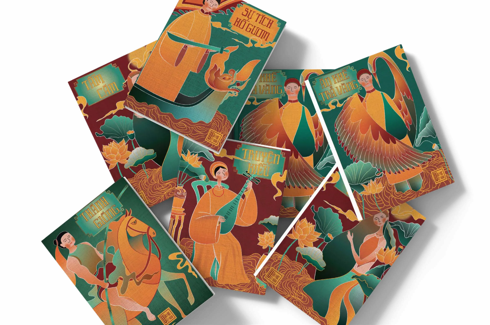

PHAM Nhu Quynh
Contact
PHAM Nhu Quynh
Contact
Book CoversIllustration, Book cover design
Couvertures de livresIllustration, design de couvertures
Book CoversCouvertures Traditional Vietnamese StoriesContes traditionnels vietnamiens
Creative IntentionIntention créative
Design book covers for five traditional Vietnamese stories. The goal is to visually capture the essence and cultural significance of each tale through simple yet impactful illustrations and color schemes.
Concevoir les couvertures de cinq contes traditionnels vietnamiens. L’objectif : saisir visuellement l’essence et la portée culturelle de chaque récit, grâce à des illustrations et des palettes simples mais percutantes.

The Tale of KiềuLe Roman de Kiều
A literary masterpiece by Nguyễn Du, telling the turbulent and tragic life of Thúy Kiều — a woman of exceptional beauty and talent who sacrifices her own happiness out of filial duty. The cover, with its warm tones and the image of Kiều playing the lute, reflects her sorrowful fate and deep artistic soul.
Chef-d’œuvre littéraire de Nguyễn Du, ce récit retrace la vie tourmentée et tragique de Thúy Kiều, femme d’une beauté et d’un talent exceptionnels qui sacrifie son propre bonheur par piété filiale. La couverture, avec ses tons chauds et l’image de Kiều jouant du luth, reflète son destin douloureux et sa profonde âme d’artiste.

“Tấm Cám”« Tấm Cám »
A beloved folktale that embodies humanistic values and the triumph of justice. The cover portrays Tấm gracefully surrounded by lotus flowers — a symbol of purity and resilience — emphasizing the ultimate victory of goodness over cruelty.
Conte populaire très aimé, il incarne des valeurs humanistes et le triomphe de la justice. La couverture montre Tấm, gracieuse, entourée de fleurs de lotus — symbole de pureté et de résilience — pour souligner la victoire finale du bien sur la cruauté.

The Legend of Sword LakeLa Légende du lac de l’Épée
Recounts the historic resistance against the Ming invaders and the tale of King Lê Lợi returning the divine sword to the Golden Turtle God. The cover illustrates the king with the sacred sword, symbolizing peace, righteousness, and the sacred bond between the people and their nation.
Ce récit relate la résistance historique contre les envahisseurs Ming et l’histoire du roi Lê Lợi rendant l’épée divine au Génie de la Tortue d’or. La couverture représente le roi tenant l’épée sacrée, symbole de paix, de droiture et du lien sacré qui unit le peuple à sa nation.

“Ăn khế trả vàng” — The Starfruit Tree« Ăn khế trả vàng » — Le Carambolier
A moral fable about greed and fairness. The cover features the majestic mythical bird with radiant wings, symbolizing mystery and the just rewards (or consequences) of human actions.
Une fable morale sur la cupidité et l’équité. La couverture met en scène l’oiseau mythique aux ailes éclatantes, symbole de mystère et de la juste récompense (ou des conséquences) des actes humains.

“Gióng”« Gióng »
Saint Gióng is a heroic legend of a village boy who grew into a giant, riding an iron horse to drive away invaders. The bold cover design, with its striking green and orange palette, conveys extraordinary strength, patriotism, and the indomitable spirit of the Vietnamese people.
Saint Gióng, c’est la légende héroïque d’un garçon de village devenu géant, qui chevauche un cheval de fer pour chasser les envahisseurs. Par son audace et sa palette vert et orange saisissante, la couverture exprime une force hors du commun, le patriotisme et l’esprit indomptable du peuple vietnamien.
